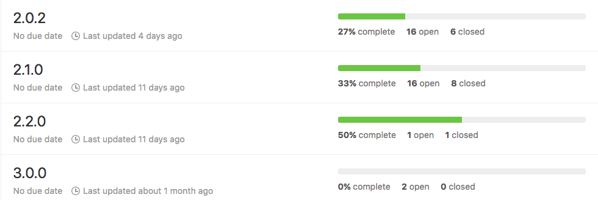

zażółć gęślą jaźń
testy
– Oh my God. I didn't even know Smarties made a cereal.
– They don't. It's just Smarties in a bowl with milk.
- podpunkt
- więcej informacji
Black -
White -
League -
Sky -
Beige -
Simple
Serif -
Blood -
Night -
Moon -
Solarized
Angular 3
O co tyle krzyku?
Michał Miszczyszyn

Kto zna AngularJS?

AngularJS
stworzony przez pracowników Google
pierwsze wydanie: 20.10.2010 r.
6 lat temu!
AngularJS
wykorzystywany przez gigantów
Apple, Netflix, PayPal, weather.com, YouTube
AngularJS
Odmienił Internet
AngularJS
rewolucja:
Two-way data binding
{{myModel}}
angular.module('TwoWayApp');
<div ng-app="TwoWayApp">
<h2>{{myModel}}</h2>
<input ng-model="myModel">
</div>
AngularJS
rozszerza HTML, ale nie zastępuje go
“Angular is what HTML would have been, had it been designed for applications.”
To był rok 2010
Przewińmy kilka lat do przodu
Ludzie dostrzegają problemy z AngularJS
AngularJS
- Wydajność dirty checking
- Trudne do debugowania problemy ze scopem
{{ myVar }}
{{ myVar }}
<div ng-show="isVisible">
<input ng-model="myVar">
</div>
{{ myVar }}
{{ myVar }}
<div ng-if="isVisible">
<input ng-model="myVar">
</div>
- mała zmiana = nowy scope
- prosta aplikacja przestaje działać
- jak trudne było debuggowanie skomplikowanych przypadków?
Pojawiają się:
- WebComponents
- Virtual DOM
- Uniwersalne Aplikacje
React.js
- Komponenty
- Virtual DOM
- Renderowanie po stronie serwera
React.js
One-way data binding
Porządkuje przepływ danych
AngularJS próbuje nadrobić
Wprowadza komponenty
Zachęca do zrezygnowania z Two-way data binding
AngularJS nie potrafi
- renderować po stronie serwera
- kompilować do kodu natywnego
AngularJS nie potrafi
Rozwiązać swoich problemów bez
zerwania kompatybilności wstecznej

Rodzi się Angular 2
Angular 2
- wrzesień 2014: Ogłoszono Angular 2
- kwiecień 2014: Developer Preview
- grudzień 2015: Beta
- maj 2016: RC
- wrzesień 2016: wersja 2.0.0
Angular 2 2.0.0 ???
Angular 2.0.0
Angular
Angular nie ma zbyt wiele wspólnego z AngularJS*
*oprócz nazwy
Angular to zupełnie nowy framework
Angular
- rozwiązuje wszystkie problemy AngularJS
- …a także znacznie więcej
Angular
- Oparty o komponenty
- Nie ma „luźnych” kontrolerów
- Wszystko jest komponentem
Angular
- Napisany w TypeScript
- Aplikacje można pisać w TS lub ES2016
- Zalecana jest kompilacja aplikacji*
Angular: Szybki przykład
(tu był live coding, przewiń w dół aby zobaczyć przykłady)
class MyComponent {
}
export class MyComponent {
}
@Component({
})
export class MyComponent {
}
import {Component} from '@angular/core';
@Component({
})
export class MyComponent {
}
import {Component} from '@angular/core';
@Component({
selector: 'my-component'
})
export class MyComponent {
}
import {Component} from '@angular/core';
@Component({
selector: 'my-component',
template: ``
})
export class MyComponent {
}
import {Component} from '@angular/core';
@Component({
selector: 'my-component',
template: `
<h2>Hello 3camp!</h2>
`
})
export class MyComponent {
}
Zdarzenia
dowolne zdarzenia DOM:
<input (click)="…">
<input (input)="…">
<input (change)="…">
Zdarzenia
własne zdarzenia:
<my-component (change)="…">
<my-component (flow)="…">
<my-component (cokolwiek)="…">
Atrybuty
dowolne atrybuty DOM:
<input [value]="…">
<input [checked]="…">
<input [disabled]="…">
Atrybuty
własne atrybuty:
<my-component [user]="…">
<my-component [data]="…">
<my-component [message]="…">
Two-way data binding
- Angular się o niego nie opiera
- (jak było w AngularJS)
- ale czasem jest to przydatne
- np. przy pracy z formularzami
Two-way data binding
<input [(ngModel)]="myValue">
<my-component [(someModel)]="user">
Czy ta składnia Was odstrasza?
Mnie trochę tak.
Alternatywna składnia
<input on-click="…">
<input bind-value="…">
<input bindon-ngModel="…">
rozbudowane formularze
- grupowanie pól
- walidacja (również asynchroniczna)
potężny router
- „leniwe” ładowanie komponentów
- Dependency Injection
- Moduły
- Reactive Programming: RxJS
- renderowanie po stronie serwera
- … i więcej
Jak zacząć z Angularem?
- Użyj Angular-CLI!
Angular-CLI
- niczego więcej nie trzeba
- żadnych yeomanów
- generatorów
- tysiąca różnych konfiguracji
- jedno domyślne narzędzie
- (bolączka Reacta)
Angular-CLI
$ ng new moj-projekt$ ng generate component myComponent$ ng serve$ ng lint$ ng test$ ng e2e$ ng build*Kompilacja
- ogromne pole do optymalizacji
- duża część kodu Angulara to kompilator szablonów
- …i klasy, z których możemy akurat nie korzystać
*Kompilacja
- klas (tree shaking)
- szablonów (Ahead of Time)
Zysk z kompilacji?
| development: | 1,4MB |
| pełna kompilacja: | 39KB |
| 36 razy mniej! | |
Co dalej?
Angular 3 Czo?
To tylko SemVer!
- AngularJS 1.0
- AngularJS 1.1
- AngularJS 1.2
- AngularJS 1.3
- AngularJS 1.4
- AngularJS 1.5
To tylko SemVer!
- Angular 2
- Angular 3
- Angular 4
- Angular 5
- Angular 6
- Angular 7

Dokąd teraz?
Michał Miszczyszyn